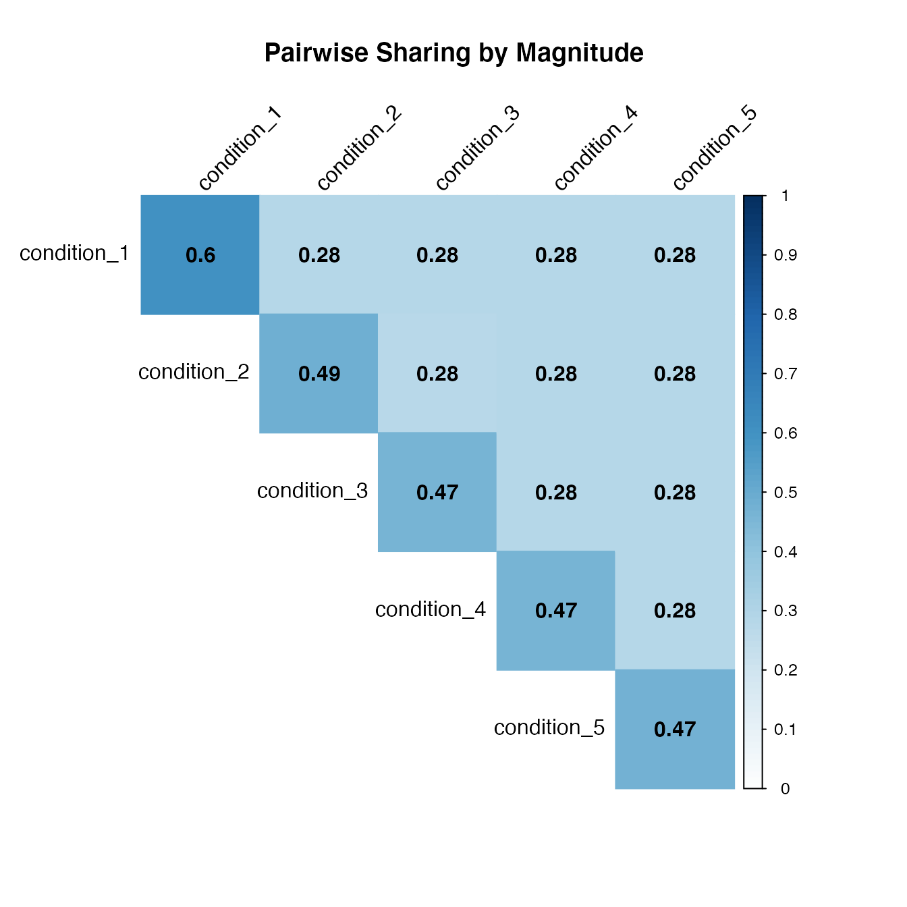

Sample from mash posteriors
Yuxin Zou
2020-06-27
Source:vignettes/mash_sampling.Rmd
mash_sampling.RmdIntroduction
Besides the point estimates from the posteriors of mashr, we also provide the option to sampling from the posteriors. Using the samples, we can answer many questions. For example, what proportion of effects have the same sign and similar magnitude for each pair of conditions?
We use simulated data for illustration. The simulation routine creates a dataset with 5 conditions, and four different types of effect: null, independent among conditions, condition-specific in condition 1, and shared (equal effects in all conditions). It creates 500 effects of each type for a total of 2000 effects.
library(mashr)
# Loading required package: ashrset.seed(1) simdata = simple_sims(500,5,1)
Fit mash model with samples from the posteriors
Read in the data and set up the covariance matrices:
data = mash_set_data(simdata$Bhat, simdata$Shat) U.c = cov_canonical(data)
Here, we draw 100 samples from the posteriors of each effect.
m = mash(data, U.c, algorithm.version = 'R', posterior_samples = 100)
# - Computing 2000 x 151 likelihood matrix.
# - Likelihood calculations took 0.21 seconds.
# - Fitting model with 151 mixture components.
# - Model fitting took 0.50 seconds.
# - Computing posterior matrices.
# - Computation allocated took 5.30 seconds.Using get_samples(m), we have a \(2000 \times 5 \times 100\) array for samples.
If we fit the mash model without the posterior samples, we could use mash_compute_posterior_matrices to sample from the mash object.
m$result = mash_compute_posterior_matrices(m, data, algorithm.version = 'R', posterior_samples = 100)
Pairwise sharing
To answer ‘what proportion of effects have the same sign and similar magnitude for each pair of conditions?’, mash has a function to summarize the results from samples. Here, we define similar in magnitude to mean both the same sign and within a factor of 2 of one another.
\[ \begin{align*} &\text{Proportion of effects have the same sign and similar magnitude for condition r, r'} \\ &= \frac{1}{2000} \sum_{j=1}^{2000}\mathbb{E}\left(\mathbb{I}(b_{jr}, b_{jr'} \text{ have same sign and similar magnitude}) \right) \\ &\approx \frac{1}{2000} \sum_{j=1}^{2000} \frac{1}{100} \sum_{m=1}^{100} \mathbb{I}(b_{jr}^{(m)}, b_{jr'}^{(m)} \text{ have same sign and similar magnitude}) \end{align*} \] The last approximation is achieved by sampling.
library(corrplot)
# corrplot 0.84 loadedx = get_pairwise_sharing_from_samples(m, factor=0.5, lfsr_thresh = 1) corrplot(x, method='color', cl.lim=c(0,1), type='upper', addCoef.col = "black", tl.col="black", tl.srt=45, title = 'Pairwise Sharing by Magnitude', mar = c(4,0,4,0))

We can also get the proportion of significant effects have the same sign and similar magnitude for each pair of conditions. For each pair of conditions, first identify the effects that are significant in at least one of the two conditions. Then compute the probability of sharing in sign and magnitude.
x = get_pairwise_sharing_from_samples(m, factor=0.5, lfsr_thresh = 0.05) corrplot(x, method='color', cl.lim=c(0,1), type='upper', addCoef.col = "black", tl.col="black", tl.srt=45, title = 'Pairwise Sharing by Magnitude', mar = c(4,0,4,0))

The pairwise sharing proportions are higher, since it is computed out of significant signals only.
There is another function in mashr package (get_pairwise_sharing) that compute the proportion of significant signals shared by magnitude in the estimated effect sizes, for each pair of conditions. For each pair of conditions, first identify the effects that are significant in at least one of the two conditions. Then compute what fraction of these have an estimated (posterior mean) effect size within a factor factor of one another.
x = get_pairwise_sharing(m, factor=0.5) corrplot(x, method='color', cl.lim=c(0,1), type='upper', addCoef.col = "black", tl.col="black", tl.srt=45, title = 'Pairwise Sharing by Magnitude', mar = c(4,0,4,0))